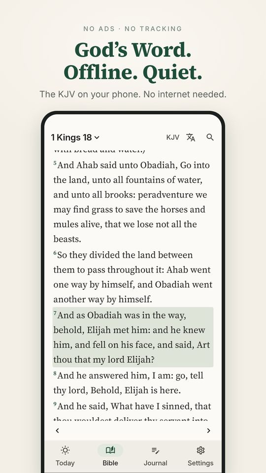
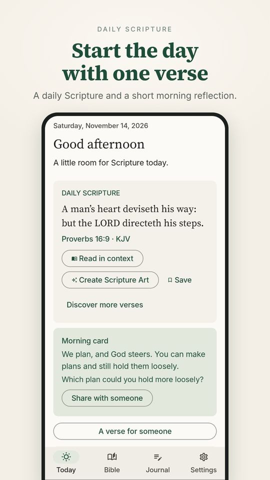
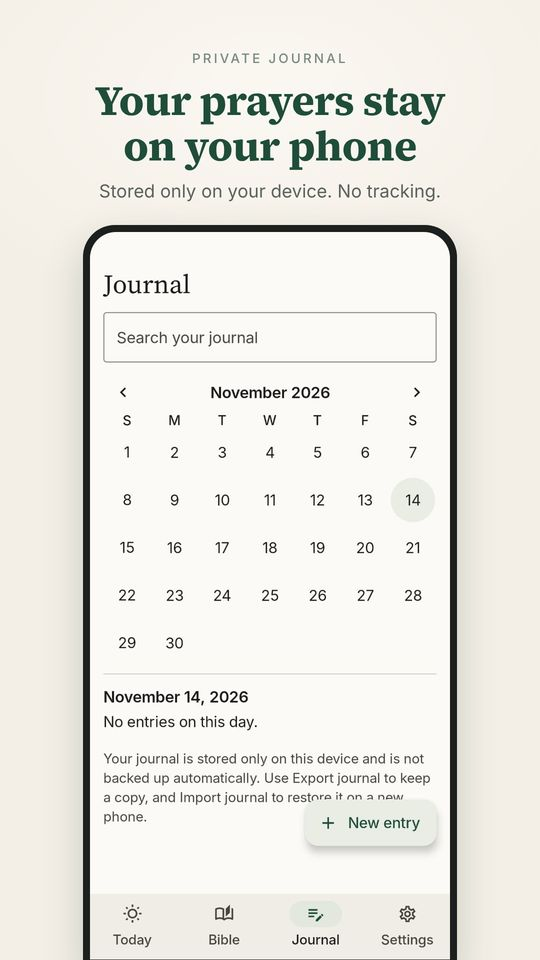
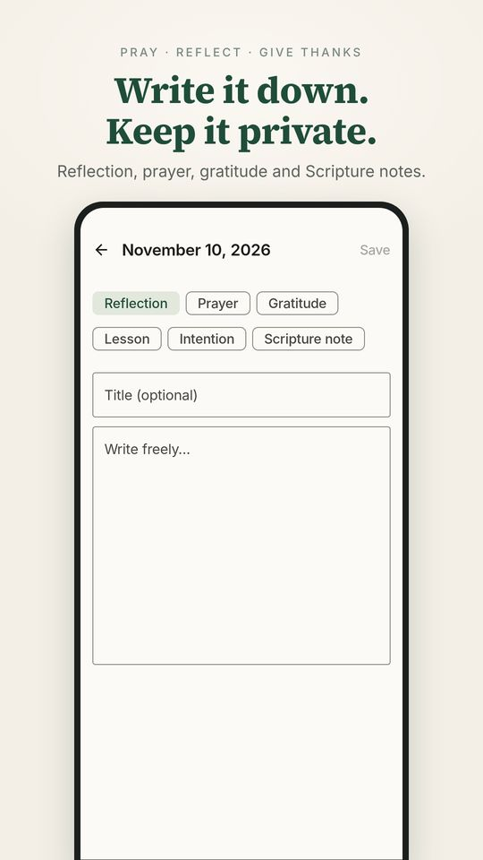
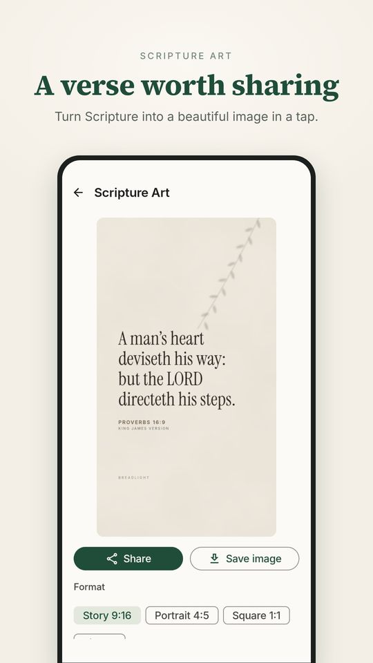
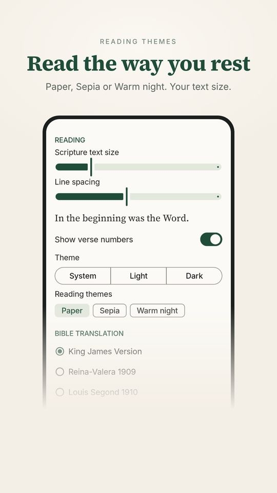

In short
What is Breadlight?
Breadlight is an Android app for your quiet time. It has an offline Bible, a daily verse card, short guided sessions and a private prayer journal.
The idea is simple. Pick up your phone to meet God, not to be pulled into ads, notifications or someone else’s timeline.
Quiet
No ads. No streaks, no scores, no guilt when you miss a day.
Private
No account. Your journal stays on your phone and is never sent to our servers.
Always on
The Bible is stored on your phone, so you can read on a plane, on a hike or when data runs out.
What it looks like
See inside
Screenshots from the app. Swipe to see them all.






An example day
One day with Breadlight
- Open the verse cardRead one verse and a short reflection while the coffee brews.
- A few minutes of quiet timeFollow a guided session: Scripture, reflection, prayer. Stop any time and pick up later.
- Send a verse to a friendSomeone is struggling? Pick their situation, add a name and send it by WhatsApp.
- Write in your prayer journalNote what you are thankful for and what you are carrying. Only you can read it.
What is inside
What can you do with it?
- Read the Bible offline13 translations in 10 languages. Search by word, phrase or reference such as John 3:16. Bookmarks, highlights and notes on any verse. Verse text is always exact, never shortened or paraphrased.
- Daily verse cardOne chosen verse, a short reflection and one gentle question to carry through the day. Seasonal cards for Advent, Christmas, Easter and more.
- Guided quiet timeScripture, reflection, prayer, practice and growth in a few calm minutes. It starts with “Rooted by the Water” (Psalm 1).
- Private prayer journalWrite prayers, thanks, lessons and Scripture notes, linked to a verse if you like. It stays on your device.
- A verse for someonePick a situation such as sickness, grief or a new start, add a name and a few words, and send the exact Bible text by WhatsApp or any app.
- Scripture artTurn a verse into an image for Stories or a post. 10 Classic styles are free.
Compared with others
How is it different from the big Bible apps?
The big Bible apps are good and have helped many people. Breadlight does not try to replace them. It is built differently: small, quiet and fully yours.
| Breadlight | Big Bible apps, in general | |
|---|---|---|
| Account | Not needed. Just open it. | Usually offered, for sync, plans and community. |
| Ads and tracking | No ads. No analytics. | It differs by app. Check each privacy policy. |
| Prayer journal | A core feature. Stored on your phone, can be exported and imported. | Often verse notes, frequently kept in an account or cloud. |
| Feel | Quiet. No streaks, scores or feed. | Often social features, friends and busy reminders. |
| Without internet | Every translation is already on your phone. | Usually possible after downloading the versions you choose. |
| Translations | 13 translations, 10 languages. | A very large number, often thousands. |
| Audio and reading plans | Not yet. | Usually complete. |
| Cost | Free for daily use. Pro is optional: yearly or once. | It differs by app. |
The right column is a general picture, not a verdict on any single app. Other apps change, so check them directly.
Choose Breadlight if you
- want quiet time without distractions
- do not want to create an account or share data
- need a truly private place to pray in writing
- often have a weak signal
Keep a big app if you
- need thousands of translations or local languages
- like audio Bibles and reading plans with a community
- want everything synced across devices
You can install both. Many people use a big app for study and Breadlight for a quiet morning.
Questions and answers
Questions people often ask
Is Breadlight free?
Yes, for everyday use. Free includes all 13 translations, daily verse cards, A Verse for Someone, 10 Classic art styles, three rotating guided sessions and up to 10 journal entries.
Pro is optional. Google Play shows the price before you confirm.
What does Pro add?
Parallel reading in two translations, reading themes (Paper, Sepia, Warm Night), 30 Studio art styles, images without the Breadlight mark, journal PDF export, all 7 guided sessions, unlimited journal entries with a calendar, and more entry types.
Choose Pro yearly (renews until you cancel in Google Play) or pay once for Lifetime.
Do I need internet?
Not to read. Every translation is stored on your phone. Internet is only used for things like installing the app or buying Pro through Google Play.
Do I have to sign up?
No. There is no account at all. Install, open and use.
Is my journal private? Who can read it?
Your journal is stored on your device. There is no account and no cloud sync, so we never see what you write.
One thing to remember: if you uninstall the app, the journal goes with it. Export a copy now and then.
What if I change phones?
Export a copy of your journal on the old phone and import it on the new one. Because there is no cloud, you do this step yourself before you switch.
Are there ads or tracking?
No ads and no analytics. Purchases are handled by Google Play.
Which translations and languages are there?
13 translations in 10 languages: KJV, WEB and BSB in English, plus Spanish, French, German, Portuguese, Italian, Russian, Swahili, Tagalog and Hindi.
An Indonesian Bible text is not included.
Is there an audio Bible or reading plans?
Not yet. Breadlight focuses on reading, reflecting, praying and writing. If you want audio or reading plans with a community, a big Bible app suits that part better.
Does it replace my Bible or my church?
No, and it is not meant to. Breadlight is a companion for your time with God. It does not replace your Bible, your church or the people who walk with you.
Where can I get it?
Search for “Breadlight: Bible & Quiet Time” on Google Play, or use the button at the top. It is available for Android.